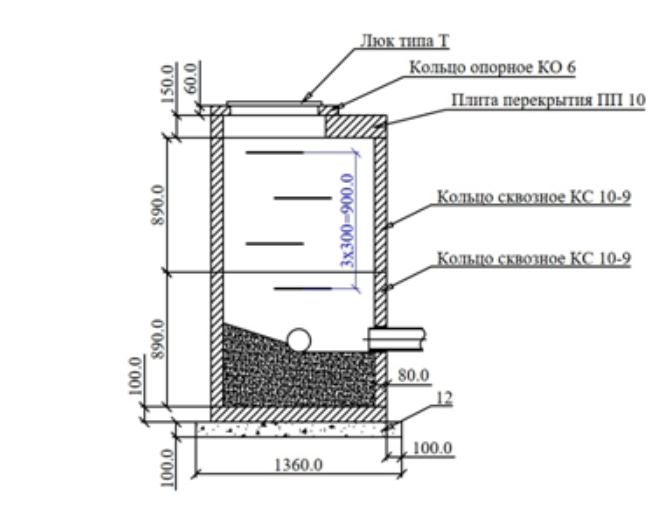
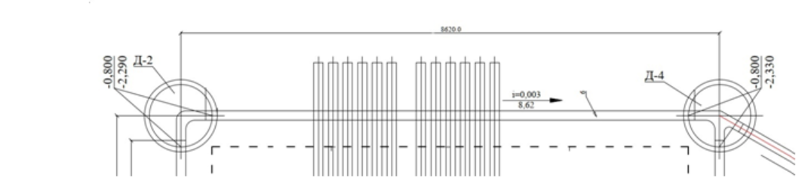

Наружные сети водоснабжения и канализации

При строительстве НВК основными составляющими являются колодцы, трубы и арматура. Для их монтажа используют дополнительные материалы, которые необходимо правильно подсчитать и учесть при подаче выполнения. На какие детали обращать внимание, чтобы не пропустить все материалы и виды работ, рассмотрим ниже.
Основные объемы работ при строительстве сетей рассчитывают по колодцам и трубам.
Рассмотрим на примере ж/б колодца

Для корректного подсчета объемов необходимо разобрать состав работ «снизу вверх»:
- подготовка основания;
- сборка ж/б колодца: сборные ж/б элементы укладывают на слой ЦПС, толщина указана в проекте;
- пробивка отверстий;
- монтаж труб;
- заделка отверстий: возможна дополнительная герметизация;
- гидроизоляция внешних боковых поверхностей колодца мастикой: количество слоев указано в проекте;
- устройство лотка в ж/б колодце;
- установка верхнего кольца и люка, скоб.
Состав сборной части ж/б колодца принимают по проекту, но в случаях, когда отметка верха благоустройства изменилась, состав сборной части может также измениться. Могут появиться дополнительные сборные элементы для наращивания высоты, либо проектные элементы заменят на те, которые подойдут по итоговой высоте.
Работа в КС-2 подается в кубических метрах, а материал будет указан в штуках
Объем каждого элемента можно рассчитать самостоятельно или воспользоваться справочными данными из ГОСТ 8020-2016.
Монтаж колец производится на слой ЦПС, его толщина указана в проекте, но при этом нужно уметь рассчитывать объем ЦПС на один стыковой элемент. Для этого необходимо рассчитать внутреннюю и внешнюю площадь сборного элемента, найти разницу и умножить ее на толщину ЦПС. Отразим в формуле:Исходное изображение недоступно. Адрес источника
Диаметр ж/б элемента также можно найти в ГОСТ 8020-2016.
Пробивка отверстий под монтаж труб вычисляется следующим образом:
- при сверлении:
- при пробивке:Исходное изображение недоступно. Адрес источника
После монтажа трубы отверстие необходимо заделать бетоном. Объем заделки вычисляется так:Исходное изображение недоступно. Адрес источника

Особенности расчета трубы при строительстве НВК
При строительстве канализации длину трубы в РД рассчитывают от центра до центра колодца.

При строительстве труба заводится в колодец чуть дальше стенки. Поэтому фактический расчет трубы будет отличаться от проекта. При подаче объемов в работе будет учтена длина трубы по факту, а в материалах может быть учтен коэффициент на потери.
То же касается прокладки кабельных линий: работу принимают по строительной длине, а в графе «Материалы» будет учтен коэффициент.
При монтаже труб из любых материалов нужно учитывать соединительные элементы – муфты, для каждого вида трубы они свои (х/ц, электросварные и т. п.). Пластиковые трубы могут быть тоже соединены сваркой.
Читайте чертежи на вертикальные и горизонтальные конструкции в соответствующих направлениях
Чтобы верно подсчитать объем работ, необходимо читать чертежи для горизонтальных конструкций слева направо, для вертикальных – снизу вверх.